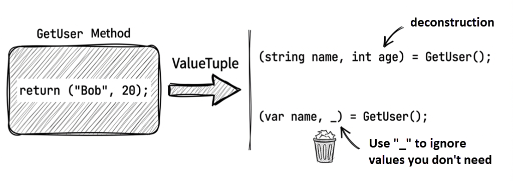

Chapter 2: Declarations and syntactic sugar
Modern C# offers many language features that make code cleaner and easier to read. Some are best understood as syntactic sugar, while others are more than mere shorthand and affect how the compiler interprets and generates code. Mastering these features is a key step in evolving from code that works to professional-grade code.
This chapter covers some of the most essential language features: implicitly typed locals with var, dynamic typing with dynamic, collection expressions, object initializers, auto-implemented properties, anonymous types, string interpolation, and tuples with deconstruction.
2.1 Implicitly typed locals with var
C# 3.0 introduced the var keyword, which lets the compiler infer a local variable’s type.
Think of it as a transparent storage box. You don’t need to label the outside with “apple” (an explicit type) because you can see the apple inside (the compiler can infer the type from the initializer on the right-hand side). Here is the simplest example:
These two lines are completely equivalent—the generated IL is identical.
How type inference works
The compiler infers the type from the initializer expression on the right-hand side. The following example also shows how var in a foreach statement is inferred from the array element type:
The new[] syntax is called implicitly typed array creation. The compiler inspects the element types to infer the array type (see “Pitfalls” later in this section).
Note
C# 12 introduced a feature called collection expressions, which lets you write things like
new[] { 1, 2, 3 }in a more uniform way.The earlier example
var numbers = new[] { 1, 2, 3 };can be rewritten using a collection expression as:
int[] numbers = [1, 2, 3];Note: You cannot use
[...]withvarbecause the compiler needs a target type to determine which concrete collection type to create (array,List<T>,Span<T>, and so on).Later in Section 2.3, we’ll look at collection expressions and spread syntax in more detail. Chapter 13 then revisits them from a performance perspective in
Span<T>scenarios.
var limitations
- An initializer is required: The compiler needs it to infer the type.
- Local variables only: You can’t use
varfor fields or regular method parameters. - One variable per declaration: declaring two variables this way will not compile.
var i = 10, j = 20; // ✗ Won’t compileWhile var can’t be used for regular method parameters, it can be used for lambda expression parameters, like this:
Func<int, int, int> add = (var x, var y) => x + y;This syntax is mainly useful when you need to apply attributes to lambda parameters, for example: ([NotNull] var x, var y) => .... In ordinary cases, writing the type explicitly is usually clearer.
For a complete introduction to lambda expressions, see Chapter 8, “Delegates and lambda expressions.”
Pitfalls in type inference
When using var, pay close attention to array type inference. The compiler looks for the best common type that all elements can implicitly convert to:
// ✓ Inferred as int[]
var numbers = new[] { 1, 2, 3 };
// ✓ Inferred as long[] (all elements can convert to long)
var mixed = new[] { 1, 10000000000L };
// ✓ Inferred as double[] (int can implicitly convert to double)
var doubles = new[] { 1, 2.5 };
// ✗ Compile-time error: no common type can be inferred
var invalid = new[] { 1, "text" };Best practices
- When initializing an array with mixed element types, consider specifying the resulting type explicitly:
// ✓ Explicitly specify double[]
double[] values = new[] { 1, 2.5, 3 };- For complex LINQ query results,
varis often the only practical choice:
// ✓ The explicit type would be too long; use var
var grouped = students
.GroupBy(s => s.City)
.Select(g => new { City = g.Key, Count = g.Count() });
// ✗ Verbose and not helpful
// (The type name below is illustrative only —
// anonymous type names cannot be used in source code)
IEnumerable<AnonymousType<string, int>> grouped = ...When to use var (and when not to)
✓ Good uses
- The right-hand type is obvious:
Anonymous types: You must use it (covered later)
Complex generics:
// The explicit type would be distracting here
var grouped = students.GroupBy(s => s.City);These examples show why implicit typing is especially useful with LINQ and anonymous types: it improves readability by stripping away noisy type repetition.
✗ Avoid when it hides meaning
Source code: DemoVar
2.2 Dynamic typing with dynamic
C# 4.0 introduced the dynamic keyword to defer type checking to runtime.
var vs dynamic
Here’s a side-by-side comparison:
- The compile-time type is
string, and the runtime type is alsostring. - The compile-time type is
dynamic, while the runtime type isstring. - This fails at compile time: Cannot implicitly convert type
stringtoint. - This fails at runtime: Cannot implicitly convert type
stringtoint.
You can assign a dynamic variable to a var variable, but when you mix dynamic and var, there are a few details worth watching for:
dynamic and ExpandoObject
In practice, dynamic is often used together with System.Dynamic.ExpandoObject. The primary benefit of ExpandoObject is that it represents a dynamic object whose members (properties, methods, events) can be added, changed, or removed at runtime—without needing to define its shape at compile time. In short, it gives C# objects JavaScript-like flexibility.
The following example adds properties at runtime and passes the object to a method that accepts a dynamic parameter:
Notes:
dynamic obj = new ExpandoObject();: If you want to use dynamic member syntax such asobj.FirstName = ..., the variable’s compile-time type must bedynamic. If you change it tovar obj = new ExpandoObject();, the code still compiles, but the compile-time type becomesExpandoObject, so the later dynamic member access will no longer compile.obj.FirstName = "Bruce";andobj.LastName = "Wayne";: A dynamically typed object can have arbitrary properties added.
If you rewrite the ExpandoObject creation and property assignments using an anonymous type, it looks like this:
In this specific example, both approaches produce the same result because GetFullName takes a dynamic parameter and only needs FirstName and LastName to exist at runtime. That said, anonymous types and ExpandoObject are not equivalent: the members of an anonymous type are fixed once created, whereas ExpandoObject lets you add or remove members at runtime.
Source code: DemoDynamic
Pitfalls and alternatives
dynamic can be convenient (for example, when working with COM interop, or with ExpandoObject or certain libraries that return dynamic objects), but it comes with real costs:
- Performance penalty: Dynamic binding consumes additional CPU.
- No compile-time checks: Typos (for example, typing
Lenghtinstead ofLength) often won’t be caught until runtime, and only if that specific line of code executes. - Harder refactoring: IDE rename tools often can’t reliably update dynamic member names.
In many modern .NET scenarios that use System.Text.Json, even if you write JsonSerializer.Deserialize<dynamic>(json), you will usually still get a JsonElement. That does not mean you can then access JSON properties directly with dynamic member syntax such as obj.Name. This is because System.Text.Json uses its own object model (JsonElement) and does not go through the DLR (Dynamic Language Runtime), so annotating the type as dynamic has no effect on what gets deserialized.
The introduction of dynamic in C# reflected a transitional compromise for interoperability. However, as generics, pattern matching, typed serialization, and IDE tooling have matured, modern C# has increasingly embraced strong typing rather than bypassing it. Unless you have a specific, compelling reason, it’s usually best to avoid dynamic.
2.3 Collection expressions
C# 12 introduced collection expressions, and since then square brackets [] have become a convenient, expressive syntax for working with collections. The benefit goes beyond shorter code. More importantly, the same syntax can now initialize arrays, List<T>, Span<T>, ReadOnlySpan<T>, and other collection types in a more uniform way, while also giving the compiler more room for optimization.
Keep one key idea in mind: the [...] on the right only describes a sequence of elements; the actual result type is determined by the target type supplied by the left-hand side or the surrounding context.
For example, the same [1, 2, 3] can represent an int[], a List<int>, or a Span<int>, depending on the target type in play.
When to use them
This section highlights a few common situations where collection expressions are especially useful:
- Initializing collections
- Combining multiple collections
- Passing collection arguments to methods
- Creating empty collections
- Working with
Span<T>orReadOnlySpan<T>
Initializing collections
This is the most straightforward and one of the most common use cases. In the past, different collection types often required noticeably different initialization styles. Collection expressions make them look more consistent.
Before:
With collection expressions, you can use a single form:
As you can see, the code on the right now looks much more uniform. The compiler decides what to create based on the target type on the left. That is one of the biggest strengths of collection expressions: the syntax is more consistent, while the resulting type remains type-safe and semantically clear.
Combining multiple collections
If you need to combine several collections into a new one, collection expressions work especially well with the .. spread syntax. In many cases, this is more direct than AddRange, Concat(...).ToArray(), or manual copying.
Here, .. section1 means “take the elements in section1 and expand them into the new collection expression.”
Note
The
..here is spread syntax in a collection expression. It looks the same as the..used in list patterns in Chapter 6, but it serves a different purpose. Here it expands elements while building a new collection; in a list pattern, it matches a range of elements during pattern matching.
Passing collection arguments to methods
Collection expressions are not limited to variable declarations. They are also very convenient at call sites. As long as the parameter type is clear, you can often use [] directly.
This style lets the caller describe only the elements it wants, without exposing the construction details of an intermediate collection.
Additionally, starting with C# 13/.NET 9, params parameters are no longer limited to arrays — they can also use collection types such as IList<T>, Span<T>, and ReadOnlySpan<T>. This means collection expressions can be combined with params collection parameters, giving callers more flexibility:
Creating empty collections
Empty collections are another place where collection expressions work well. Compared with older patterns like new string[0] or new List<int>(), [] is more direct and easier to read.
When the target type is clear, the compiler may also choose a more efficient implementation for an empty collection. For example, when the target type is T[], the compiler may use something similar to Array.Empty<T>()—a shared, pre-allocated empty array—rather than allocating a new one each time.
Working with Span<T> or ReadOnlySpan<T>
Collection expressions are common with Span<T> and ReadOnlySpan<T>. These types often appear in parsers, tokenizers, data processing code, and other performance-sensitive scenarios. Collection expressions make their initialization syntax more uniform and easier to read than stackalloc.
For example:
When the target type is Span<T> or ReadOnlySpan<T>, the compiler may use stack allocation when the data is small enough and does not escape the current stack frame, but this does not guarantee behavior identical to hand-written stackalloc. Chapter 13 returns to this topic from the perspective of high-performance memory handling.
Source code: DemoCollectionExpressions
Two common limitations
Collection expressions are powerful, but there are still two practical limitations: one involves type inference, and the other involves Dictionary.
You cannot rely on var to infer the type
The following does not compile:
var numbers = [1, 2, 3]; // ✗ Won't compileThe compiler rejects this because it does not know whether you want int[], List<int>, Span<int>, or some other supported collection type. You need to write the target type explicitly:
int[] numbers = [1, 2, 3]; // OK
List<int> values = [1, 2, 3]; // OKThis once again shows that collection expressions are target-typed syntax, not literals with a fixed natural type.
Limitations with dictionary initialization
Collection expressions are mainly designed for sequences of a single element type. For a type like Dictionary<TKey, TValue>, which has key-value semantics, there is no corresponding key-value entry syntax. So if you want to create a dictionary with initial contents, you still need to use traditional initialization syntax, for example:
However, if you only need to represent an empty dictionary, you can still write:
2.4 Object initializers
Object initializers let you set property values while creating an object, using cleaner syntax.
For example, suppose you have a Student class:
Traditional creation and initialization might look like this:
With an object initializer, you avoid repeating student.:
This approach is shorter and also reads more naturally. You’re expressing the intent to “create a Student with these specific values,” rather than describing it as a sequence of steps: “create an object, then set its name, then set its birthday.”
Note
To keep the examples focused on syntax, some later class snippets in this chapter omit nullable reference type handling. If nullable analysis is enabled in your project, properties such as
string Namewould typically need a default value, arequiredmodifier, or constructor-based initialization to avoid compiler warnings.

With constructors
You can also call a constructor and still use an initializer:
public class Student
{
public string Name { get; set; }
public DateTime Birthday { get; set; }
public Student() { }
public Student(string name) { Name = name; }
}
// Usage
var stud1 =
new Student {
Name = "Alice",
Birthday = new DateTime(1971, 1, 20)
};
var stud2 = new Student("Bob") { Birthday = new DateTime(1991, 6, 17) };Important: the initializer runs after the constructor finishes, so an initializer can overwrite values set by the constructor. For example:
// Constructor sets Name to "Default", but the initializer overwrites it with "Alice"
var s = new Student("Default") { Name = "Alice" };
// s.Name == "Alice"Source code: DemoObjectInit
Collection initializers
Collection types (such as List<T>) can also use initializer syntax:
Source code: DemoCollectionInit
Index initializers (C# 6+)
Collections with indexers (such as Dictionary) can use a more concise syntax:
// C# 5 style
var students = new Dictionary<int, Student>
{
{ 101, new Student { Name = "Bob" } },
{ 102, new Student { Name = "Carol" } }
};
// C# 6+ index initializer syntax
var students = new Dictionary<int, Student>
{
[101] = new Student { Name = "Bob" },
[102] = new Student { Name = "Carol" }
};Note: The two syntaxes are not entirely equivalent: the older collection initializer ({ key, value }) calls Add under the hood and throws ArgumentException on a duplicate key, whereas the index initializer ([key] = value) uses the indexer and silently overwrites any existing entry. Keep this difference in mind when choosing between them.
Source code: DemoIndexInit
Object initializers vs optional parameters
Some developers use optional constructor parameters to achieve a similar effect:
Although they look similar, you should generally prefer object initializers when you’re designing a library for third-party use.
This is because an optional parameter’s default value (for example, null in the previous snippet) is baked directly into the caller’s compiled code. If you change that default value in a future version of your library (for example, to a fixed date, or from null to DateTime.UnixEpoch), existing compiled client applications will continue to pass the old default value until they are recompiled. This can lead to subtle binary compatibility issues.
Object initializers don’t have this problem because they’re essentially equivalent to “call whichever constructor you chose (parameterless or parameterized)” and then “assign properties.” They don’t bake optional-parameter defaults into the call site, so they aren’t affected by later changes to those defaults.
2.5 Auto-implemented properties
C# has had property syntax since 1.0. A property usually has a corresponding private field, plus a pair of accessors for reading and writing: a getter and a setter.
This section reviews how property syntax has evolved—from early, manually written backing fields to modern, concise auto-properties. We’ll also look at the newer field keyword and how it makes it easier to add validation without giving up the convenience of auto-properties.

C# 1.0: classic properties
If a caller assigns an invalid value, you get a runtime error:
In this example, throw ... raises a runtime exception. ArgumentOutOfRangeException is a better fit here because the setter received an invalid argument value. Chapter 5 covers exception handling.
C# 2.0: restricted access
Starting with C# 2, you can give the getter and setter different access levels (for example protected or private). A common pattern is a public getter with a private setter, so callers can read a property but can’t modify it—effectively making it read-only to external callers.
If an accessor should have the same access level as the property itself, you simply omit the access modifier. Accessors can only be more restrictive than the property. For example, if the property ID is public, then an accessor can be internal, protected, or private—but not explicitly public.
C# 3.0: auto-implemented properties
C# 3 introduced auto-implemented properties (often shortened to “auto-properties”). They let you define properties without explicitly declaring a private backing field. When a class has many properties, this removes a lot of boilerplate:
public class Employee
{
public string ID { get; private set; } // Readable, but not writable.
public string Name { get; set; }
// Imagine this class has many more properties;
// that shows how many backing-field declarations disappear.
public Employee(string id) // Constructor
{
ID = id; // Initialize auto-property ID.
}
}Under the hood, the compiler generates private members for the ID and Name properties. These are called backing fields. Auto-properties are great for simple data holders. If you need custom logic in a getter or setter, you still need to write the accessor bodies explicitly.
Source: DemoAutoPropBasic
When to use auto-properties
- ✓ Simple data container classes (DTOs, POCOs).
- ✓ Properties that don’t need validation or side effects.
- ✗ When you need validation or other logic in getters/setters, plain auto-properties are not a good fit. That said, the
fieldkeyword in C# 14 partially addresses this limitation—see the next section for details.
Terminology
- DTO (Data Transfer Object): A simple object used to move data between layers/systems, typically with properties but no business logic.
- POCO (Plain Old CLR Object): A plain CLR object that doesn’t inherit framework base classes or implement framework-specific interfaces—kept simple and testable.
The field keyword (C# 14)
C# 14 introduced the field keyword so that, inside an accessor, you can directly access the compiler-generated backing field—without manually declaring a private field. This is a significant improvement for auto-properties.
Before the field keyword, if you wanted validation in a setter, you typically had to declare a private field:
With the field keyword, you can keep the validation logic while avoiding the private field declaration:
This approach has a few clear advantages:
- Less boilerplate: No private field declaration, and no separate field name to maintain.
- Fewer mistakes: Validation and auto-properties can coexist without you having to remember the right field name.
- Safer refactoring: Renaming the property doesn’t require renaming a separate field.
One subtle point: once any accessor of a property uses the field keyword, the compiler synthesizes a backing field for that property. In practice, that means the other accessors of the same property should usually use field consistently as well (or remain auto-accessors), rather than mixing field with a manually declared field. The following example still compiles, but it produces warning CS9266. The reason is that the getter reads from the compiler-generated field, while the setter writes to the manually declared _count. The two accessors therefore operate on different storage locations, so the value you set is never what you get back:
Here are a few common patterns:
public class Person
{
// Read-only property: the compiler still generates a backing field,
// but this property does not use the `field` keyword explicitly
public string Id { get; } = Guid.NewGuid().ToString();
// Property with validation
public string Name
{
get;
set => field = value ??
throw new ArgumentNullException(nameof(value));
} = "";
// Property change notification (common in MVVM)
public string Email
{
get;
set
{
if (field != value)
{
field = value;
OnPropertyChanged();
}
}
} = "";
private void OnPropertyChanged([CallerMemberName] string? name = null) { }
}Source: DemoAutoPropField
Note: If your type already has a member named field (a field, property, method, etc.), you can use @field or this.field to disambiguate.
2.6 Anonymous types
Sometimes you temporarily need a type to hold a few related values inside a method, but defining a whole new named class would be unnecessary. That’s where anonymous types come in.
Start with a basic example:
This example uses var for the local variable emp, which is the most common and practical way to work with anonymous types. Because the compiler generates the anonymous type and decides its actual name, var is usually the right choice if you want to keep using that type directly with normal static member access in the current scope. You can still assign an anonymous object to object or dynamic, or pass it through generic type inference, but then you lose the convenience of working with the anonymous type itself.
Possible output:
The last line prints the runtime type name of the anonymous type. Keep in mind that this name is an internal compiler detail, so it may vary across compiler versions or depending on the surrounding code. The important point is that it is a compiler-generated generic type, not a type name you can write directly in source code.
Source: DemoAnonTypeBasic
Q: “Since the runtime type name is visible, can we declare variables using it?”
No. If you try to declare a variable using the anonymous type name shown in the runtime output (for example, <>f__AnonymousType...), the compiler still won’t accept it.
Type reuse
Within the same assembly, the compiler reuses an anonymous type when the property names, property types, and property order all match:
For efficiency, the compiler reuses the same generated type when the anonymous type’s structure matches.
var emp2 = new { Name = "John", Birth = new DateTime(1981, 12, 31) };
// emp1 and emp2 have different types!Value equality
Anonymous types also have a practical feature: the compiler implements Equals and GetHashCode for them. That means two instances are considered equal when they are instances of the same anonymous type (that is, the compiler reused the type because the property names, types, and order all match) and all property values are equal:
This makes anonymous objects useful in LINQ operations like grouping (GroupBy) or de-duplication (Distinct).
Projection initializers
Anonymous types also support projection initializers. In this context, “projection” means taking existing properties or local variables and projecting them into properties on a new anonymous type.
Besides explicitly naming properties (new { Prop = value }), you can create anonymous types by projecting from an existing object’s properties or from local variables. For example:
public class Employee
{
public string Name { get; set; }
public DateTime Birthday { get; set; }
}
var emp = new Employee
{
Name = "Michael",
Birthday = new DateTime(1971, 1, 1)
};
// (1) Project object properties
var emp1 = new { emp.Name, emp.Birthday };
// (2) Project local variables
string name = "John";
int age = 20;
var emp2 = new { name, age };
Console.WriteLine("emp1.Name = " + emp1.Name);
Console.WriteLine("emp2.name = " + emp2.name);Output:
Two projection styles are shown here:
- Projecting object properties: The compiler uses the source property names (
Name,Birthday) as the new property names. - Projecting local variables: The compiler uses the local variable names (
name,age) as the new property names.
Nondestructive mutation
Starting with C# 10, you can use the with expression on anonymous types. This is called nondestructive mutation: it creates a new object by copying all properties, while changing a selected subset. The with expression also works with records and structs — see Chapter 4 for details.
For example:
This is especially convenient when working with immutable data: you don’t have to retype every property just to change one.
Source: DemoAnonTypeMutation

Limitations
When using anonymous types, keep a few restrictions in mind:
- Not a good fit for owning disposable resources: The compiler-generated type itself doesn’t implement
IDisposable. If it contains disposable objects, those objects still need to be disposed separately, so anonymous types are usually a poor way to wrap such resources. - Not a good fit for long-lived or cross-boundary collection element types: Inside one method or assembly, you can absolutely store anonymous objects in an array or
List; but if the data needs to cross method, project, or public API boundaries, an explicitly named type is usually the better choice. - Not suitable as part of a public method signature: You can pass an anonymous type to parameters typed as
object,dynamic, or to generic methods that infer the type. But if the method signature itself needs to express the type clearly, anonymous types are the wrong tool because you can’t name their type in public API surface.
Practical note
Anonymous types are most commonly used as intermediate results in LINQ queries, not for long-term storage.
2.7 String interpolation
C# 6 introduced string interpolation, which lets you embed expressions directly in strings and often makes code read more naturally.
First, compare it with string.Format:
Source: DemoStringInterpolation
Note: Starting with C# 10 (.NET 6), interpolation can be optimized via interpolated string handlers (see DefaultInterpolatedStringHandler). It’s no longer always lowered to string.Format or string.Concat. In many cases it allocates less and runs faster.
Formatting and alignment
You can add a colon (:) after an interpolated expression to specify a format string, and a comma (,) to specify alignment.
Format strings:
Alignment:
The number after the comma is the field width. Positive means right-aligned; negative means left-aligned.
Constant interpolated strings (C# 10)
Starting with C# 10, if every interpolation hole in an interpolated string is filled with a constant string, the interpolated string itself can be declared as const.
Example:
Raw string literals (C# 11)
C# 11 introduced raw string literals, which are well suited to JSON, XML, HTML, SQL, and other text that contains lots of quotes and backslashes.
Raw string syntax
Use at least three double quotes (""") to wrap the text. From C#’s perspective, quotes, backslashes, newlines, and spaces inside are taken as-is, so you don’t need C# string escaping. However, if the content is JSON, XML, or some other format, it still has to obey that format’s own rules. For example, C:\\Windows in the sample below uses two backslashes because it represents a JSON string. Using only one backslash there would make the JSON itself invalid.
The indentation of the closing """ determines the base indentation removed from each content line.
If your content includes three consecutive quotes ("""), you can wrap it with four quotes (""""), and so on.
Combining with interpolation
You can combine $ with """. If your raw string contains many {} characters (common in JSON/CSS/JS), you can use multiple $ to change the interpolation delimiter.
For example, with $$, only {{…}} is treated as an interpolation hole; a single { is treated as plain text:
Rule summary:
$"text"→{expr}interpolates.$$"""text"""→{{expr}}interpolates; single{is plain text.$$$"""text"""→{{{expr}}}interpolates;{and{{are plain text.
This mechanism lets you generate structured text (JSON, XML, HTML, CSS, JavaScript) while keeping interpolation available. It is usually cleaner and less error-prone than manually escaping braces.
Example: generating CSS
Source: DemoRawStringLiterals
2.8 Tuples and deconstruction
Before C# 7.0, if a method needed to return multiple values, you typically used out parameters, created a dedicated DTO type, or used System.Tuple (available since .NET 4.0). Each approach has drawbacks: out parameters are awkward (and don’t work well with async methods), creating dedicated types can be overly verbose, and the older System.Tuple forces meaningless member names like Item1 and Item2 upon you.
C# 7.0 introduced ValueTuple to address these pain points.
Tuple basics
If a class is like a sturdy but heavy suitcase, a tuple is more like a lightweight zipper bag: when you just need to carry a few related values together, a tuple is often the more straightforward choice.
You can use parentheses () to define a tuple and name its elements:
Under the hood, this syntax uses the generic struct System.ValueTuple<T1, T2, ...>. The compiler maps your custom element names to the underlying fields, so you’re no longer stuck with Item1 and Item2.
Returning multiple values
The most common use case is returning more than one value from a method:
Compared to using out parameters, this code reads more naturally and is easier to follow.
Source: DemoTupleBasic
Q: Why do some older codebases use Tuple.Create("Bob", 23)? How is it different from ("Bob", 23)?
A: System.Tuple is a class (a reference type), which adds allocation pressure. The modern tuple syntax uses System.ValueTuple, which is a struct (a value type) and is typically more GC-friendly. Unless you’re maintaining an API that requires System.Tuple, prefer the newer syntax.
Deconstruction
C# also provides deconstruction syntax, which lets you “split” a tuple or other object into multiple independent variables:
You can also use var:
var (lat, lon) = GetCoordinates("Taipei 101");Discards
If you only need some of the returned values, you can use _ as a discard:
var (lat, _) = GetCoordinates("Taipei 101"); // We only need latitudeThis makes it clear to the reader that we’re intentionally ignoring certain values, not simply forgetting to use them.

Deconstructing custom types
Tuples aren’t the only deconstructable types. Any type can support deconstruction as long as it defines a special method named Deconstruct.
The following example lets Person support two deconstruction forms:
public class Person
{
public string Name { get; set; }
public DateTime Birthday { get; set; }
public string Email { get; set; }
// Define a Deconstruct method
public void Deconstruct(out string name, out DateTime birthday)
{
name = Name;
birthday = Birthday;
}
// You can overload Deconstruct
public void Deconstruct(out string name, out DateTime birthday, out string email)
{
name = Name;
birthday = Birthday;
email = Email;
}
}Using it implicitly calls Deconstruct:
Source: DemoTupleDeconstruction
Design guidelines:
Deconstructmust returnvoid.- Parameters must be
outparameters. - You can overload it by varying the number of parameters.
- It’s commonly used to expose key properties of a complex object.
Summary
var: Lets the compiler infer types, keeping code concise. Use it when the type is obvious or overly verbose.dynamic: Defers type checking to runtime—more flexible, but less safe. In modern C#, avoid it unless you truly need it.- Collection expressions: Use
[...]to initialize arrays,List<T>,Span<T>, and similar collection types in a uniform way. Use..to spread an existing sequence. - Object and collection initializers: Set initial values while creating objects/collections.
- Auto-implemented properties: Reduce boilerplate by letting the compiler generate backing fields.
- The
fieldkeyword (C# 14): Access the backing field inside accessors while keeping auto-property syntax. - Anonymous types: Temporary data containers, often used in LINQ.
- String interpolation and raw strings: String interpolation uses
$to embed expressions, while raw strings use"""to preserve multi-line text and special characters; the two can also be combined. - Tuples: A lightweight way to return multiple values; supports deconstruction and discards.
In the next chapter, we’ll explore one of the most important safety features in modern C#: null safety.
Glossary
| Term | Description |
|---|---|
| Anonymous type | A compiler-generated unnamed type; useful for temporary data containers (especially in LINQ). |
| Auto-implemented property | A property whose backing field is generated by the compiler. |
| Backing field | The private field that actually stores a property’s value. |
| Collection expression | C# 12 syntax that uses [...] to initialize arrays, List, Span, and other collection types. |
| Collection initializer | Syntax for adding elements while creating a collection. |
| Deconstruction | Splitting a value into multiple variables (often with tuples). |
| Discard | Using _ to ignore a value you don’t care about. |
| Dynamic typing | Using dynamic to defer type checking to runtime. |
field keyword |
A C# 14 feature that lets you access an auto-property’s backing field inside an accessor. |
| Format string | A string that specifies formatting (for example C2). |
| Implicitly typed variable | A local declared with var, with its type inferred by the compiler. |
| Index initializer | C# 6+ syntax for initializing collection elements via indexers. |
| Object initializer | Syntax for setting property values while creating an object. |
| Projection initializer | Syntax that projects existing properties/locals into an anonymous type. |
| Spread syntax | Using .. inside a collection expression to expand the elements of an existing sequence. |
| String interpolation | $"...{expr}..." syntax for embedding expressions into strings. |
| Syntactic sugar | Syntax that doesn’t add new capabilities, but makes code easier to write/read. |
| Tuple | A lightweight structure for grouping values, often used for multi-value returns. |